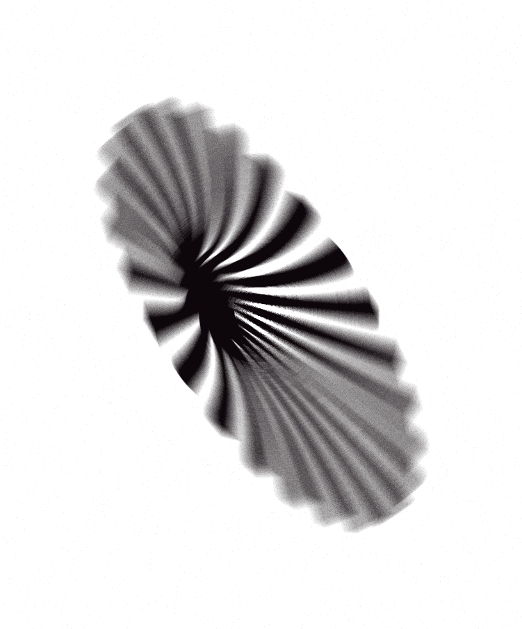

Connection—work bridging thresholds between design, the world, communication, silence, and the everything else that makes us artists and designers.
resize

Gabriel Abascal
2020 GD
I And Love And You
Publication
I And Love And You is a book I made as the culmination of my degree
project in May of 2020.

Alexis Elaine Reid
2021 GD
Physical Poster Series
Printed Media
These poster have been created in an analog way and then digitally
manipulated.

Wendy Chao
2022 GD
Knoll Research Library Concept Posters + Kit
Printed Media
Posters and Design Kit for the Knoll Workplace Research Library.
Icons and style reflect the content and research of Knoll’s essay “10
Ergonomic Tips For A Healthier Workspace”

Lydia Chodosh
2024 GD MFA
i, and
Printed Media
Created in Fall 2021 during the first year of grad study, this large
format square print explores the elemental qualities of typography,
how meaning diverges and gets redacted through repetition.

Iris Cho
2023 GD
Off the Page, 12/01/2020
Blank CD Installation
Creating the letterform ‘P’ off the page and into the real
3-dimensional world. I reused empty disks to create the letter in a
tech way.The ‘P’ although a 3D sculpture was created using materials
that are normally used to create productions on screen.

Leslie Berumen Flores
2024 GD
Type Around Us: Glow
Printed Media
Pictures of glowing and neon type found around Providence were
collaged onto a poster, creating a composition that creates the
illusion of having walked through a portal into the world of
typography.
Sharlene Deng
2023 GD
Doja Cat Poster
Printed Media
Created for Type 3, this is a fictional black and white event poster
for Doja Cat. Experimenting with typographic form, composition and
movement.

Gabriel Drozdov
2024 GD MFA
“Event”, 10/19/2021
Experiential Work Installation
“Event” is the initiation of (or portal into) an event—the spectator,
reading this prompt, brings the event into existence. The spectator’s
subjective experience gives the event meaning, shaped by the prompts’
coexistence as both unique and reproduced objects.

Anmol Govinda Rao
2023 GD
Biodiversity Infographic
Printed Media
This infographic focuses on statistical data about global diversity
with additional information gathered from various diversity databases,
highlighting how little we know about life on Earth and how much
diversity has been lost.

Kira Held
2024 GD
Confetti
Printed Media
Compositions inspired by ink and confetti

Christine Koh
2021 GD
“Back to Analog”, 4/14/21
Printed Media
An interview with Hiromu Oka, a motion graphic designer based in
Tokyo, talking about the importance of working analog (RISO) to inform
his digital processes. The final interview is translated into a 4 page
newspaper publication. This relates to the theme of portals because it
is connecting the ways in which conversations are shared remotely in
different parts of the world, and rich, valuable insight is soaked in,
opening the possibilities of approaching design differently.

Nathaniel Ladd Krohn
2023 GD
Orange Fences
Polymer Steel Plate Etching Installation
The tension and relationship between two orange fences sitting in
tandem. Confrontation illustrated on even ground. Polymer steel plate
etching.
missing information
2023 GD

Bryson Lee
2021 GD
Garden Labyrinth
Printed Media
This poster is an archive of flower breeds. With vine-like framework
and windows that showcase flowers as statues, this poster is meant to
imitate a garden hedge maze.

Hwan Lee
2023 GD
Untitled
Printed Media
A collection of images having to do with grids found in both natural
& manmade forms.
Hyelim Rose Lee
2024 GD
W.E.B. Du Bois Infographics Poster
Printed Media
This poster is dedicated to W.E.B. Du Bois’s data visualization
infographics.
Sun Ho Lee
2023 GD
Sparkle
Printed Media
Visual experimentation of the word “sparkle.”

Youjin Lim (Amy)
2023 GD
NY subway
Printed Media
A poster that describes the NY Subway Map with joyfulness by freely
placing subway lines over each other.

Manmeet Sodhi
2021 GD
A Planted Seed
Publication
A conversation about code and art between father and son.

Ruby Miller
2022 GD
Scaffolding 4: Useless Organs
Publication
Useless Organs is the 4th edition of the Scaffolding Journal by Ruby
Miller and Idene A.
Ruby Miller
2022 GD
Night Vision Diptych
Printed Media
Pair of 4x6 inch prints on photo paper.

Muhaddisa Ali
2024 GD
Compositional Studies
Printed Media
Compositional Collages made from scans of sketches

Nick Larson
2022 GD MFA
Idi-O-Matic
Website
website that generates absurd combinations of english language
idiomatic expressions.
Emma E Noel
2022 GD
What’s RISD Wearing?
Publication
What’s RISD Wearing? is a compilation zine of observed 2021 RISD
student fashion sense. The zine also serves as an accompanying tool to
the article I wrote, featured in The Glob RISD Newspaper (2021). This
limited edition zine was printed on the risograph and spiral bound
with a clear coil. The zine features a fold out riso copy of the
newspaper article at the back.

Erin Isla Roman
2022 GD
Sept-Oct 2021
Printed Media
To kick off the year, DSIII students created posters (based on the
idea of taxonomy) that were transformed into public installation
pieces. This work is particularly meaningful to me because it involves
the community, and not just because of the interactive collage aspect.
From ordering custom fluorescent chalk markers from Micheal B. at the
RISD Store to talking to Peter at the 3D store about cut orders for
acrylic sheets to learning how to vinyl cut from Ed and John at the
type shop, this piece would not have been possible without the help of
the RISD community.

Adèle Roncey
2022 GD
Créativité With Julia Parris
Publication
Spread based on an interview with photographer, art director, and
founder of Analog is Heavy, Julia Parris. The interview touches base
on creativity and the practice of making.
Adèle Roncey
2022 GD
Words in Inks, 05/2021
Publication
Artist book exploring Language and text emphasizing texture and
patterns through different printing techniques. Language takes form
with poetry and found cited text adding multiple layers of voice.
Cotton and black denim fiber based handmade paper and several printing
processes including inkjet, screen print, letterpress and sewing.
Alex Sarkissian
2022 GD
Reframing the Poster: The Poster
Printed Media
Inspired by a class the designer has not been able to reframe his
schedule to fit.

Avery Shaw
2022 GD
Driving In Providence
Printed Media
Driving In Providence is a letter-pressed poster series. Using wooden
type and a two large linoleum cuts, the poster depicts the frustration
and rage of a Providence driver. Each line of type is like a brick in
the face. Made on a Vandercook letterpress for repetition and
consistency, each one includes a unique ink treatment, done by a
hand-roller prior to each print.

Jieun Song (MJ)
2023 GD
My Collection
Publication
This collection of images captures a range of natural items that
people collect, study, or worship. It explores parallels between
Romantic and Transcendental appreciation for nature and those of more
institutional religious rituals. The cold epistemology of modern
scientific viewpoints adds extra dimension to the collection, as these
objects exist at intersections between spirituality and science,
pulling us both toward nature and separating us from it.

Utkan Dora Öncül
2022 GD
Spark Newsletter
Publication
A monthly newsletter of three interviews with creatives.
Alternatively, a sweet resource for design students. Flip and use as a
poster after reading.
Utkan Dora Öncül
2022 GD
Biophilic Prints
Silkscreen Printed Media
A set of 5 layer silkscreen prints diving into the humans
relationship with nature with use of text annotation and photographic
symbolism.

Tianqi Wang
2022 GD
Insomnia Diary
Publication
A double-sided illustration zine about the insomnia experience.
Printed in riso.

Iris Xie
2023 GD
Waking Up
Printed Media
This digital souvenir immerses you in how it feels to wake up in the
morning as someone who is not a morning person. Zoom in for jokes!

Rain Ruihua Yang
2022 GD + INTAR
The “Traveling Grooves” Zine
Publication
Traveling Grooves: An experimental Zine created and fabricated from a
private collection of vinyl and a dozen set of typefaces.

Jeff Yao
2022 GD
Form in Motion
Video
A short, upbeat motion piece with animated cylinders made of
typography. For a fictional show about Swiss design.

Jeff Yao
2022 GD
Still Life and Self Portrait
Printed Media
A set of two darkroom prints of food arrangements, one at the Met and
one at Chengdu Taste, a local Chinese restaurant.

Nina Jun Yuchi
2021 GD
Happy Birthday!
Publication
Happy birthday! This colorful zine goes through the narrative of an
absurd dream, folding out into a 10.5"x16.5" poster.
Erica Yun
2023 GD
“Uglies” Poster Series
Printed Media
The series depicts the dystopian society in the book “Uglies” in
which individuals’ body imagery is distorted and transformed by the
forced surgeries of the government. The work represents the loss of
individuality and freedom, incorporating the photos of disassembled
doll bodies.

Mehek Vohra
2024 BRDD GD + Cognitive Neuroscience
Lost in Translation
Publication
Lost in Translation explores the visual interplay between Arabic,
English and Hindi. By filtering images of text through the iPhone
lens, Google Translate, Photoshop filters, and an OCR system, the
meaning of each word is transformed. The final “image,” is a poem in
English, sometimes humorous, sometimes incomprehensible, which
reflects the abstract nature of translation.